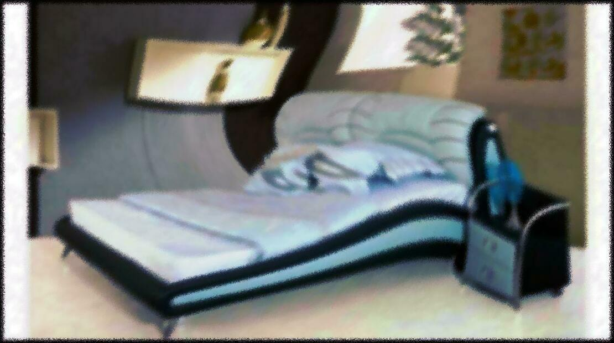
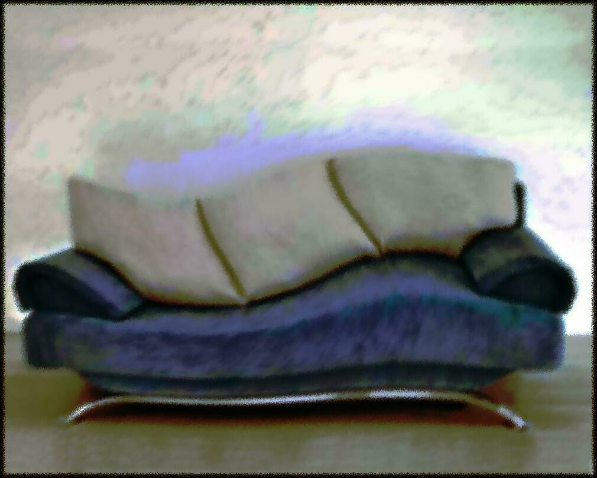

Canapele extensibile | Cumpără online azi - IKEA
 IKEA Produse Camere Noutăţi Idei Oferte speciale IKEA Caută Produse Camere Noutăţi Idei Oferte speciale Profilul meu Urmărește comanda IKEA Family IKEA for Business Livrare Despre magazin Contactează-ne Produse Noutăţi Mobilier Soluţii depozitare Bebeluşi şi copii Mobilier pentru exterior Paturi şi saltele Bucătării şi electrocasnice Accesorii pentru bucătărie şi veselă Produse pentru baie Textile Covoare şi covoraşe Corpuri de iluminat Decoraţiuni Plante şi ghivece Accesorii pentru curățenie și rufe Amenajarea locuinţei Electronice pentru casă Siguranța Mâncare şi băutură Animale de companie Timp liber şi produse pentru siguranţă IKEA home smart Pentru vară Sărbători de iarnă Camere Dormitor Camera de zi Bucătărie Sufragerie Camera copiilor Baie Biroul de acasă Hol Exterior Vizualizate recent Schimbă țara Produse Mobilier Paturi Canapele extensibile
Canapele extensibile
Canapele extensibile Fotolii extensibile Selecţie de salteleCanapele extensibile pe care poți sta confortabil și avea un somn bun
Vezi toate canapelele extensibile
Canapelele extensibile fac două sau, uneori, trei lucruri deodată – nu se odihnesc niciodată, dar îți permit ție și oaspeților să vă odihniţi! Cu o canapea extensibilă versatilă, ai un loc unde poţi sta şi te poți relaxa ziua și un spațiu eficient de dormit noaptea. Unele modele au, de asemenea, depozitare integrată și sunt piese de mobilier incredibil de eficiente.
Iată câteva sfaturi despre cum să alegi canapeaua extensibilă potrivită pentru casa ta.
Dimensiune şi spaţiu
Când alegi o canapea extensibilă, trebuie să iei în considerare dimensiunea necesară a canapelei şi cum se va integra în casa ta.
Ai nevoie de o canapea în care să încapă o familie mare sau un grup de prieteni? În acest caz, poate o canapea extensibilă mare de colţ , cu 3 locuri, ar putea fi o opţiune bună. Dacă nu ai mult spaţiu în casa ta, ai putea să te orientezi spre o canapea extensibilă cu două locuri sau una mică de colţ. Dacă spaţiul tău este foarte limitat, îţi oferim, de asemenea, o selecţie de fotolii extensibile pentru o persoană.
Măsoară spațiul atât pentru canapea cât și pentru pat
Reţine că este nevoie de spaţiu în plus pentru mecanismul care transformă canapeaua într-un pat pentru oaspeţi. De exemplu, o canapea extensibilă pliantă necesită spaţiu liber în fata canapelei sau măcar un spațiu care poate fi eliberat uşor. Un mecanism clic-clac necesită spaţiu liber în spatele canapelei, deoarece spătarul este împins înapoi şi pliat. Poţi alege, de asemenea, o canapea extensibilă care se trage în exterior sau o saltea care va avea nevoie de spaţiu liber în faţă, la fel ca o canapea care se pliază.
Dacă ai un spaţiu mic, depozitarea lenjeriei de pat de rezervă poate fi o provocare. În acest caz, o canapea extensibilă cu depozitare integrată este o soluţie excelentă. Şi reţine, dacă ai nevoie de lenjerie de pat suplimentară asortată stilului tău, la noi găsești tot ce ai nevoie!
Canapele extensibile confortabile
Dacă spaţiul tău este limitat, ar putea fi dificil să faci loc atât unei canapele cât și unui pat în camera ta. În acest caz, o canapea extensibilă ar putea fi soluţia necesară. Dar reține, dacă vei folosi canapeaua pe post de pat principal, confortul este esenţial.
Din fericire, oferim canapele extensibile care îţi permit să foloseşti o saltea futon – ca să îţi poţi asigura condiţiile de dormit preferate. Alege gradul de fermitate şi de sprijin al saltelei exact ca la un pat obișnuit.
Înapoi la început PartajeazăPinterest Facebook Twitter Copiază link-ul
